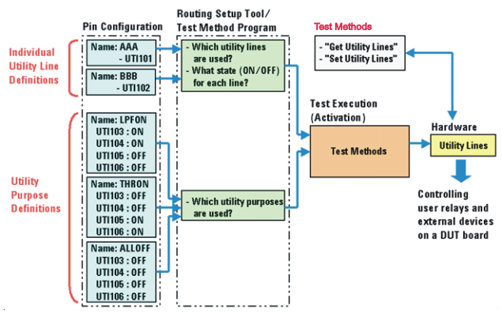

Utility line control software
Utility lines can be controlled statically (workstation‑controlled) or dynamically (sequencer‑controlled).
SmarTest 8
For information on how to control utility lines statically or dynamically, refer to Controlling utility lines and Wiring board supported instruments.
SmarTest 7
- SmartRDI
-
Controlling utility lines by SmartRDI requires that you define names for the utility lines in the Pin setting editors. The utility lines can then be controlled by the rdi.util() class or by the Routing Tools. The Routing Tools are a combination of the Routing Tools editors and the rdi.route() class of SmartRDI.
We recommend using either the Routing Tools or the SmartRDI class util(), but not both in parallel.
- Routing sets
A routing set is created with the Routing Setup Tool, and gets activated during the execution of mixed-signal test programs. This way, relays on a DUT board can be switched sequentially. This method is suitable when the utility lines are used in the Write mode to control user relays. You need to define names for the utility lines in the Pin setting editors before developing routing sets. Without these name definitions you cannot control the utility lines in your routing set.
- Utility Purpose groups
In addition to individual name definitions for utility lines, SmarTest allows you to group utility lines together with their control data (0, 1, or Do not care). Such groups can be defined in the Utility Purpose Editor. The groups can be handled similarly to the way you would handle individual utility lines.
The important difference to individual utility line definitions is that utility purpose definitions contain control data for all of the utility lines in a particular group. As a result, the required control data can be applied to several utility lines at the same time. This is useful when controlling many user relays on a DUT board and can be applied in SmarTest Work Center test, where a utility purpose definition can contain different control data for each site.
Utility purpose definitions can be simplified by taking appropriate preparatory steps prior to each test. For example, a group containing many utility lines can be set up just by a single task statement in the Routing Setup Tool. When the routing set is activated, these utility lines set the many relays on a DUT board to the desired state.
You do not have to define the names of all utility lines in a particular utility purpose group. The utility purpose group can include named (defined) and un-named utility lines.
If utility line or utility purpose names have been defined in the Pin Configuration Setup, you can control utility lines also by test methods directly without using routing sets.
Furthermore, you can control and read the status of utility lines using firmware commands.
Note Utility lines are not affected by standard connect/disconnect sequences that control DUT drivers, receivers and power supplies.The following graphic shows software tools for controlling utility lines and their inter-relationships.

Functional changes
- Introduced before SmarTest 6.3.2
- SmarTest 7.1.0: Removed Standard Test Functions
- SmarTest 7.1.0: Introduced sequencer‑controlled utility lines.